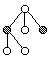
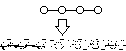
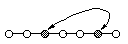
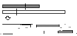

Overview of GAlib
This document outlines the contents of the library and presents some of the design philosophy behind the implementation. Some source code samples are provided at the end of the page to illustrate basic program structure, operator capabilities, operator customization, and derivation of new genome classes.
When you use the library you will work primarily with two classes: a genome and a genetic algorithm. Each genome instance represents a single solution to your problem. The genetic algorithm object defines how the evolution should take place. The genetic algorithm uses an objective function (defined by you) to determine how 'fit' each genome is for survival. It uses the genome operators (built into the genome) and selection/replacement strategies (built into the genetic algorithm) to generate new individuals.
There are three things you must do to solve a problem using a genetic algorithm:
- Define a representation
- Define the genetic operators
- Define the objective function
GAlib helps you with the first two items by providing many examples and pieces from which you can build your representation and operators. In many cases you can use the built-in representations and operators with little or no modification. The objective function is completely up to you. Once you have a representation, operators, and objective measure, you can apply any genetic algorithm to find better solutions to your problem.
When you use a genetic algorithm to solve an optimization problem, you must be able to represent a single solution to your problem in a single data structure. The genetic algorithm will create a population of solutions based on a sample data structure that you provide. The genetic algorithm then operates on the population to evolve the best solution. In GAlib, the sample data structure is called a GAGenome (some people refer to it as a chromosome). The library contains four types of genomes: GAListGenome, GATreeGenome, GAArrayGenome, and GABinaryStringGenome. These classes are derived from the base GAGenome class and a data structure class as indicated by their names. For example, the GAListGenome is derived from the GAList class as well as the GAGenome class. Use a data structure that works with your problem definition. For example, if you are trying to optimize a function that depends on 5 real numbers, then use as your genome a 1-dimensional array of floats with 5 elements.
There are many different types of genetic algorithms. GAlib includes three basic types: 'simple', 'steady-state', and 'incremental'. These algorithms differ in the way that they create new individuals and replace old individuals during the course of an evolution.
GAlib provides two primary mechanisms for extending the capabilities of built-in objects. First of all (and most preferred, from a C++ point of view), you can derive your own classes and define new member functions. If you need to make only minor adjustments to the behavior of a GAlib class, in most cases you can define a single function and tell the existing GAlib class to use it instead of the default.
Genetic algorithms, when properly implemented, are capable of both exploration (broad search) and exploitation (local search) of the search space. The type of behavior you'll get depends on how the operators work and on the 'shape' of the search space.
The Genetic Algorithm
The genetic algorithm object determines which individuals should survive, which should reproduce, and which should die. It also records statistics and decides how long the evolution should continue. Typically a genetic algorithm has no obvious stopping criterion. You must tell the algorithm when to stop. Often the number-of-generations is used as a stopping measure, but you can use goodness-of-best-solution, convergence-of-population, or any problem-specific criterion if you prefer.
The library contains four flavors of genetic algorithms. The first is the standard 'simple genetic algorithm' described by Goldberg in his book. This algorithm uses non-overlapping populations and optional elitism. Each generation the algorithm creates an entirely new population of individuals. The second is a 'steady-state genetic algorithm' that uses overlapping populations. In this variation, you can specify how much of the population should be replaced in each generation. The third variation is the 'incremental genetic algorithm', in which each generation consists of only one or two children. The incremental genetic algorithms allow custom replacement methods to define how the new generation should be integrated into the population. So, for example, a newly generated child could replace its parent, replace a random individual in the population, or replace an individual that is most like it. The fourth type is the 'deme' genetic algorithm. This algorithm evolves multiple populations in parallel using a steady-state algorithm. Each generation the algorithm migrates some of the individuals from each population to one of the other populations.
In addition to the basic built-in types, GAlib defines the components you'll need to derive your own genetic algorithm classes. The examples include a few of these derivations including (1) a genetic algorithm that uses multiple populations and 'migration' between populations on multiple CPUs, and (2) a genetic algorithm that does 'deterministic crowding' to maintain different species of individuals during the evolution.
The base genetic algorithm class contains operators and data common to most flavors of genetic algorithms. When you derive your own genetic algorithm you can use these member data and functions to keep track of statistics and monitor performance.
The genetic algorithm contains the statistics, replacement strategy, and parameters for running the algorithm. the population object, a container for genomes, also contains some statistics as well as selection and scaling operators. A typical genetic algorithm will run forever. The library has built in functions for specifying when the algorithm should terminate. These include terminate-upon-generation, in which you specify a certain number of generations for which the algorithm should run, and terminate-upon-convergence, in which you specify a value to which the best-of-generation score should converge. You can customize the termination function to use your own stopping criterion.
The number of function evaluations is a good way to compare different genetic algorithms with various other search methods. The GAlib genetic algorithms keep track of both the number of genome evaluations and population evaluations.
Defining a Representation
Use a data structure that is appropriate for your problem. If you are optimizing a function of real numbers, use real numbers in your genome. If a solution to your problem can be represented with some imaginary numbers and some integer values, define a genome with these characteristics.
Defining an appropriate representation is part of the art of using genetic algorithms (and at this point, it is still an art, not a science). Use a representation that is minimal but completely expressive. Your representation should be able to represent any solution to your problem, but if at all possible you should design it so that it cannot represent infeasible solutions to your problem. Remember that if the genome can represent infeasible solutions then the objective function must be designed to give partial credit to infeasibles.
The representation should not contain information beyond that needed to represent a solution to the problem. Although there may be merit in using a representation that contains 'extra' genetic material, unless properly implemented (in concert with the objective function and in full consideration of the type and characteristics of the search space), this tends to increase the size of the search space and thus hinder the performance of the genetic algorithm.
The number of possible representations is endless. You may choose a purely numeric representation such as an array of real numbers. These could be implemented as real numbers, or, in the Goldberg-style of a string of bits that map to real numbers (beware that using real numbers directly far out-performs the binary-to-decimal representation for most problems, especially when you use reasonable crossover operators). Your problem may depend on a sequence of items, in which case an order-based representation (either list or array) may be more appropriate. In many of these cases, you must choose operators that maintain the integrity of the sequence; crossover must generate reordered lists without duplicating any element in the list. Other problems lend themselves to a tree structure. Here you may want to represent solutions explicitly as trees and perform the genetic operations on the trees directly. Alternatively, many people encode trees into an array or parsable string, then operate on the string. Some problems include a mix of continuous and discrete elements, in which case you may need to create a new structure to hold the mix of information. In these cases you must define genetic operators that respect the structure of the solution. For example, a solution with both integer and floating parts might use a crossover that crosses integer parts with integer parts and floating parts with floating parts, but never mixes floating parts with integer parts.
Whichever representation you choose, be sure to pick operators that are appropriate for your representation.
The Genome Operators
Each genome has three primary operators: initialization, mutation, and crossover. With these operators you can bias an initial population, define a mutation or crossover specific to your problem's representation, or evolve parts of the genetic algorithm as your population evolves. GAlib comes with these operators pre-defined for each genome type, but you can customize any of them.
The initialization operator determines how the genome is initialized. It is called when you initialize a population or the genetic algorithm. This operator does not actually create new genomes, rather it 'stuffs' the genomes with the primordial genetic material from which all solutions will evolve. The population object has its own initialization operator. By default this simply calls the initialization operators of the genomes in the population, but you can customize it to do whatever you want.
The mutation operator defines the procedure for mutating each genome. Mutation means different things for different data types. For example, a typical mutator for a binary string genome flips the bits in the string with a given probability. A typical mutator for a tree, on the other hand, would swap subtrees with a given probability. In general, you should define a mutation that can do both exploration and exploitation; mutation should be able to introduce new genetic material as well as modify existing material. You may want to define multiple types of mutation for a single problem.
The crossover operator defines the procedure for generating a child from two parent genomes. Like the mutation operator, crossover is specific to the data type. Unlike mutation, however, crossover involves multiple genomes. In GAlib, each genome 'knows' its preferred method of mating (the default crossover method) but it is incapable of performing crossover itself. Each genetic algorithm 'knows' how to get the default crossover method from its genomes then use that method to peform the mating. With this model it is possible to derive new genetic algorithm classes that use mating methods other than the defaults defined for a genome.
Each of these methods can be customized so that it is specific not only to the data type, but also to the problem type. This is one way you can put some problem-specific 'intelligence' into the genetic algorithm (I won't go into a discussion about whether or not this is a good thing to do...)
In addition to the three primary operators, each genome must also contain an objective function and may also contain a comparator. The objective function is used to evaluate the genome. The comparator (often referred to as a 'distance function') is used to determine how different one genome is from another. Every genetic algorithm requires that an objective function is defined - this is how the genetic algorithm determines which individuals are better than others. Some genetic algorithms require a comparator.
The library has some basic data types built in, but if you already have an array or list object, for example, then you can quickly build a genome from it by multiply inheriting from your object and the genome object. You can then use this new object directly in the GAlib genetic algorithm objects.
In general, a genetic algorithm does not need to know about the contents of the data structures on which it is operating. The library reflects this generality. You can mix and match genome types with genetic algorithms. The genetic algorithm knows how to clone genomes in order to create populations, initialize genomes to start a run, cross genomes to generate children, and mutate genomes. All of these operations are performed via the genome member functions.
The Population Object
The population object is a container for genomes. Each population object has its own initializer (the default simply calls the initializer for each individual in the population) and evaluator (the default simply calls the evaluator for each individual in the population). It also keeps track of the best, average, deviation, etc for the population. Diversity can be recorded as well, but since diversity calculations often require a great deal of additional compuation, the default is to not record diversity.
The selection method is also defined in the population object. This method is used by the genetic algorithms to choose which individuals should mate.
Each population object has a scaling scheme object associated with it. The scaling scheme object converts the objective score of each genome to a fitness score that the genetic algorithm uses for selection. It also caches fitness information for use later on by the selection schemes.
Objective Functions and Fitness Scaling
Genetic algorithms are often more attractive than gradient search methods because they do not require compilicated differential equations or a smooth search space. The genetic algorithm needs only a single measure of how good a single individual is compared to the other individuals. The objective function provides this measure; given a single solution to a problem, how good is it?
It is important to note the distinction between fitness and objective scores. The objective score is the value returned by your objective function; it is the raw performance evaluation of a genome. The fitness score, on the other hand, is a possibly-transformed rating used by the genetic algorithm to determine the fitness of individuals for mating. The fitness score is typically obtained by a linear scaling of the raw objective scores (but you can define any mapping you want, or no transformation at all). For example, if you use linear scaling then the fitness scores are derived from the objective scores using the fitness proportional scaling technique described in Goldberg's book. The genetic algorithm uses the fitness scores, not the objective scores, to do selection.
You can evaluate the individuals in a population using an individual-based evaluation function (which you define), or a population-based evaluator (also which you define). If you use an individual-based objective, then the function is assigned to each genome. A population-based objective function can make use of individual objective functions, or it can set the individual scores itself.
So what does it look like in C++?
A typical optimization program has the following form:
float Objective(GAGenome&);
main(){
GA2DBinaryStringGenome genome(width, height, Objective); // create a genome
GASimpleGA ga(genome); // create the GA
ga.evolve(); // evolve the GA
cout << ga.statistics() << endl; // print out the results
}
float Objective(GAGenome&) {
// your objective function goes here
}
You can very easily change the behaviour of the genetic algorithm by setting various parameters. Some of the more common ones are set like this:
ga.populationSize(popsize);
ga.nGenerations(ngen);
ga.pMutation(pmut);
ga.pCrossover(pcross);
GASigmaTruncationScaling sigmaTruncation;
ga.scaling(sigmaTruncation);
Alternatively you can have GAlib read the genetic algorithm options from a file or from the command line. This snippet creates a genetic algorithm, reads the parameters from a file, reads parameters (if any) from the command line, performs the evolution, then prints out the statistics from the run.
GASteadyStateGA ga(genome);
ga.parameters("settings.txt");
ga.parameters(argc, argv);
ga.evolve();
cout << ga.statistics() << endl;
A typical (albeit simple) objective function looks like this (this one gives a higher score to a binary string genome that contains all 1s):
float
Objective(GAGenome & g)
{
GA1DBinaryStringGenome & genome = (GA1DBinaryStringGenome &)g;
float score=0.0;
for(int i=0; i<genome.length(); i++)
score += genome.gene(i);
return score;
}
You can define the objective function as a static member of a derived class, or just define a function and use it with the existing GAlib genome classes.
When you write an objective function, you must first cast the generic genome into the type of genome that your objective function is expecting. From that point on you can work with the specific genome type. Each objective function returns a single value that represents the objective score of the genome that was passed to the objective function.
Please see the examples for more samples of the library in action. And see the programming interface page for a complete list of member functions and built-in operators.
What can the operators do?
Here are some examples of the types of mutation and crossover that can be done using GAlib. Traditional crossover generates two children from two parents, and mutation is typically applied to a single individual. However, many other types of crossover and mutation are possible, such as crossover using three or more parents, asexual crossover or population-based mutation. The following examples illustrate some of the standard, sexual crossover and individual mutation methods in GAlib.

Tree Single Point Crossover
|

Sub-Tree Swap Mutation
|

Tree Node Swap Mutation

Sub-Tree Destructive Mutation
|

List Single Point Crossover
|

List Order-Based Crossover
|

List Generative Mutation
|

List Destructive Mutation
|

List Swap Node Mutation
|

List Swap Sequence Mutation
|

Fixed-Length Array Single Point Crossover
|

Variable-Length Array Single Point Crossover
|

Array Uniform Crossover
|
How do I define my own operators?
Defining the operators is only as difficult as figuring out the algorithm you want to implement. As far as the actual implementation goes, there's not much to it. To assign an operator to a genome, just use the appropriate member function. For example, the following code snippet assigns 'MyInitializer' as the initialization function and 'MyCrossover' as the crossover function for a binary string genome.
GA1DBinaryStringGenome genome(20);
genome.initializer(MyInitializer);
genome.crossover(MyCrossover);
If you do this to the first genome (the one you use to create the genetic algorithm) then all of the ones that the GA clones will have the same operators defined for them.
When you derive your own genome class you will typically hard-code the operators into the genome like this:
class MyGenome : public GAGenome {
public:
static void RandomInitializer(GAGenome&);
static int JuggleCrossover(const GAGenome&, const GAGenome&, GAGenome*, GAGenome*);
static int KillerMutate(GAGenome&, float);
static float ElementComparator(const GAGenome&, const GAGenome&);
static float ThresholdObjective(GAGenome&);
public:
MyGenome() {
initializer(RandomInitializer);
crossover(JuggleCrossover);
mutator(KillerMutate);
comparator(ElementComparator);
evaluator(ThresholdObjective);
}
// remainder of class definition here
};
Notice how easy it becomes to change operators. You can very easily define a multitude of operators for a single representation and experiment with them to see which performs better.
Why are the genome operators GAlib not member functions? The primary reason is so that you do not have to derive a new class in order to change the behaviour of one of the built-in genome types. In addition, the use of function pointers rather than member functions lets us change operators at run-time (unlike member functions or templatized classes). And they are faster than virtual functions (OK, so this the virtual/non-virtual component is a pretty small fraction of actual execution time compared to most objective functions...). On the down side, they permit you to make some ugly mistakes by improperly casting.
The definition for the List1PtCrossover looks like this:
This crossover picks a single point in the parents then generates one or two children from the two halves of each parent.
template <class T> int
OnePointCrossover(const GAGenome& p1, const GAGenome& p2, GAGenome* c1, GAGenome* c2){
GAListGenome<T> &mom=(GAListGenome<T> &)p1;
GAListGenome<T> &dad=(GAListGenome<T> &)p2;
int nc=0;
unsigned int a = GARandomInt(0, mom.size());
unsigned int b = GARandomInt(0, dad.size());
GAList<T> * list;
// first do the sister...
if(c1){
GAListGenome<T> &sis=(GAListGenome<T> &)*c1;
sis.GAList<T>::copy(mom);
list = dad.GAList<T>::clone(b);
if(a < mom.size()){
T *site = sis.warp(a);
while(sis.tail() != site)
sis.destroy(); // delete the tail node
sis.destroy(); // trash the trailing node (list[a])
}
else{
sis.tail(); // move to the end of the list
}
sis.insert(list); // stick the clone onto the end
delete list;
sis.warp(0); // set iterator to head of list
nc += 1;
}
// ...now do the brother
if(c2){
GAListGenome<T> &bro=(GAListGenome<T> &)*c2;
bro.GAList<T>::copy(dad);
list = mom.GAList<T>::clone(a);
if(b < dad.size()){
T *site = bro.warp(b);
while(bro.tail() != site)
bro.destroy(); // delete the tail node
bro.destroy(); // trash the trailing node (list[a])
}
else{
bro.tail(); // move to the end of the list
}
bro.insert(list); // stick the clone onto the end
delete list;
bro.warp(0); // set iterator to head of list
nc += 1;
}
return nc;
}
The definition for FlipMutator for 1DArrayAlleles looks like this:
This mutator flips the value of a single element of the array to any of the possible allele values.
int
FlipMutator(GAGenome & c, float pmut)
{
GA1DArrayAlleleGenome<ARRAY_TYPE> &child=(GA1DArrayAlleleGenome<ARRAY_TYPE> &)c;
register int n, i;
if(pmut <= 0.0) return(0);
float nMut = pmut * (float)(child.length());
if(nMut < 1.0){ // we have to do a flip test on each bit
nMut = 0;
for(i=child.length()-1; i>=0; i--){
if(GAFlipCoin(pmut)){
child.gene(i, child.alleleset().allele());
nMut++;
}
}
}
else{ // only flip the number of bits we need to flip
for(n=0; n<nMut; n++){
i = GARandomInt(0, child.length()-1); // the index of the bit to flip
child.gene(i, child.alleleset().allele());
}
}
return((int)nMut);
}
And the definition for a typical initializer looks like this:
This initializer creates a tree of bounded random size and forkiness.
void
TreeInitializer(GAGenome & c)
{
GATreeGenome<Point> &tree=(GATreeGenome<Point> &)c;
tree.root();
tree.destroy(); // destroy any pre-existing tree
Point p(0,0,0);
tree.insert(p,GATreeBASE::ROOT);
int n = GARandomInt(0,MAX_CHILDREN); // limit number of children
for(int i=0; i<n; i++)
DoChild(tree, 0);
}
void
DoChild(GATreeGenome<Point> & tree, int depth)
{
if(depth >= MAX_DEPTH) return; // limit depth of the tree
int n = GARandomInt(0,MAX_CHILDREN); // limit number of children
Point p(GARandomFloat(0,25),GARandomFloat(0,25),GARandomFloat(0,25));
tree.insert(p,GATreeBASE::BELOW);
for(int i=0; i<n; i++)
DoChild(tree, depth+1);
tree.parent(); // move the iterator up one level
}
What about deriving my own genome class?
Here is the definition of a genome that contains an arbitrary number of lists. It could easily be modified to become a diploid genome. It is used in exactly the same way that the built-in genomes are used. For a simpler example, see the GNU example which integrates the GNU BitString object with GAlib to form a new genome class.
class RobotPathGenome : public GAGenome {
public:
GADefineIdentity("RobotPathGenome", 251);
static void Initializer(GAGenome&);
static int Mutator(GAGenome&, float);
static float Comparator(const GAGenome&, const GAGenome&);
static float Evaluator(GAGenome&);
static void PathInitializer(GAGenome&);
public:
RobotPathGenome(int nrobots, int pathlength);
RobotPathGenome(const RobotPathGenome & orig);
RobotPathGenome& operator=(const GAGenome & arg);
virtual ~RobotPathGenome();
virtual GAGenome *clone(GAGenome::CloneMethod) const ;
virtual void copy(const GAGenome & c);
virtual int equal(const GAGenome& g) const ;
virtual int read(istream & is);
virtual int write(ostream & os) const ;
GAListGenome<int> & path(int i){ return *list[i]; }
int npaths() const { return n; }
int length() const { return l; }
protected:
int n, l;
GAListGenome<int> **list;
};
Please see the examples for complete details.
Matthew Wall, 23 March 1996